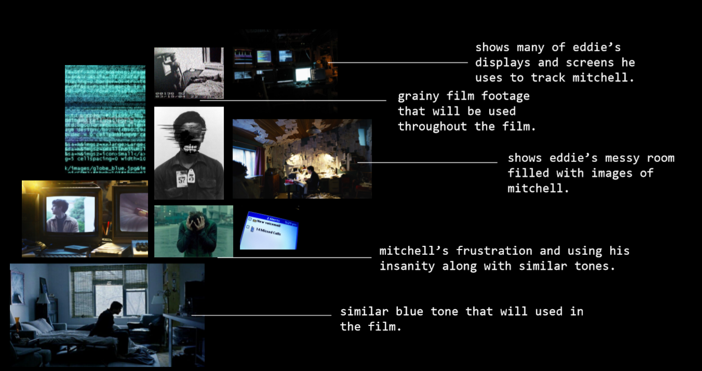
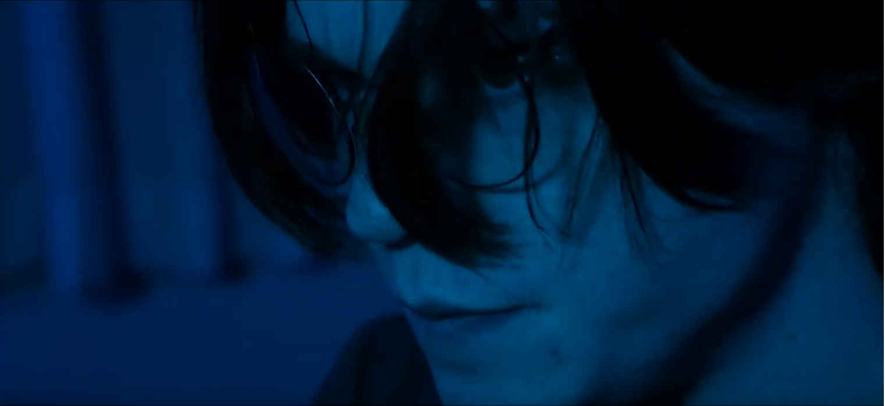
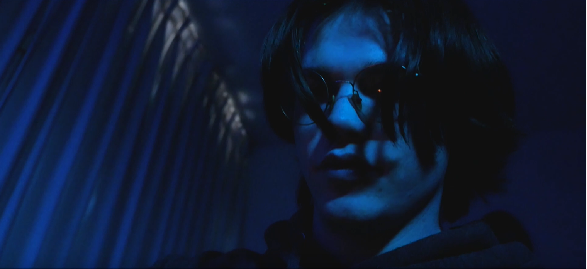

Disclosure
Description
IAT 202: New Media Images that explores the computational nature of technology as applied to contemporary art and design. The final assignment is a student short film, in teams of 4-5. Teams were expected to write, shoot, edit and produce it.
The Writing Process
The writing process was one of the most difficult parts of the project, our team wanted to write something original with themes that have not yet been explored in other short films. This took several days of brainstorm, and together we were able to write a script with everyone’s input.
After completing the script, we created a shot list and then translated that to a storyboard where we figured out the settings and shots we wanted. Creating a storyboard helped us create a visual image of what the film could look like.

Logline
"An unsettling thriller that follows a psychologically damaged man who tries to sabotage the life of his distanced friend. Through the use of hacking and psychological manipulation, the situation quickly turns grim."
Art Direction
As the art director of the film, I took inspiration from shows such as Bandersnatch and Mr. Robot. Both of these films had relevant topics and themes that inspired the film’s tones and lighting. Below is a mood board I designed to further help my team and I figure out what kind of lighting, set and shots we needed.
The set was largely inspired by Bandersnatch, with the walls filled with papers and pictures. We tried our best to recreate it.
Terrifying Technology
One of the biggest topics we wanted to explore with our film is how terrifying technology can be, and how easily it can affect one’s life and in this case; ruin it. As technology is the biggest theme of the film, I wanted our deck slides to correlate that.


We knew we wanted to make the viewer uncomfortable, and unsettled. To express this, we chose to shoot close up shots of the antagonist and to tell the story with the set and minimal dialogue.
 Editing
In my personal opinion, editing is the most important part of a film. I believe even with footage that is shot poorly, you can still save it with good editing. My team and I had shot more than 100 minutes of footage, and it was my job to find usable footage and to cut it all down to 5 minutes. Days before, we purposely tried out different shots so we can experiment with different angles and perspectives.
Reflection
Although this project was extremely stressful, I am very proud of the outcome. It was my first experience with shooting a film, and I learned so much about lighting and editing. Before this project, I was already familiar with editing on programs such as After Effects, however, picking the right 5 minutes out of 100+ minutes of footage and trying to make sense of the different shots was a completely different challenge and experience.